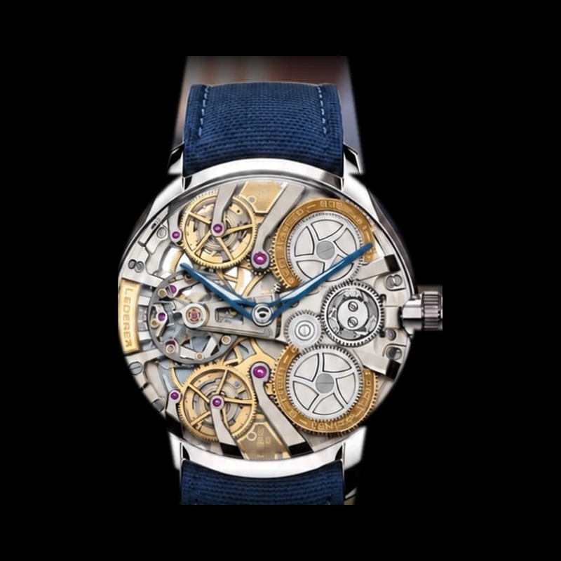

Home · The Collection · Lederer

Lederer CIC 39 InVerto Titanium
RRR · Ultra Rare — allocated through 2027
Borne on the wrist of His Highness the Crown Prince of Ajman.
Bernhard Lederer spent forty years on a single question: how to deliver energy to an escapement without ever letting the force waver. His answer is the Central Impulse Chronometer — twin going trains, twin constant-force remontoirs, and a dual detent escapement that releases its charge in perfect unison every fifteen seconds. In the InVerto he turned that mechanism to face the wearer: there is no dial, because the movement is the dial. This titanium 39 — the most compact reading of the idea, its concave case hand-polished from satin to mirror and closed by sapphire on both faces — was presented at Dubai Watch Week in November 2025, and is allocated in its entirety until the summer of 2027.
| Movement | Hand-wound, Calibre 9019 |
| Escapement | Dual detent, twin constant-force remontoirs |
| Case | Grade 5 titanium, hand-polished |
| Dial | None — the movement, inverted, is the dial |
| Case size | 39mm × 10.5mm |
| Frequency | 3 Hz (21,600 vph) |
| Power reserve | 38 hours |
| Year | 2025 |
| Valuation | CHF 152,000 |